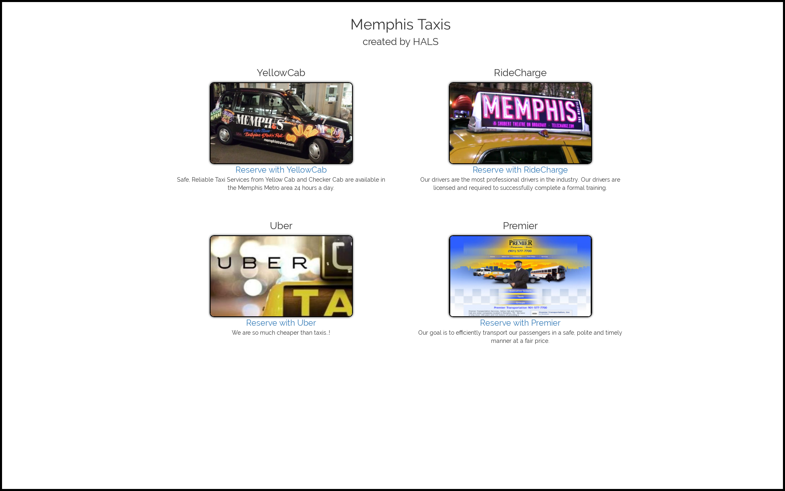
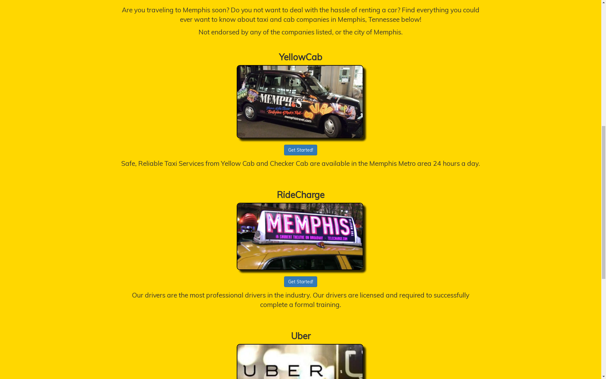
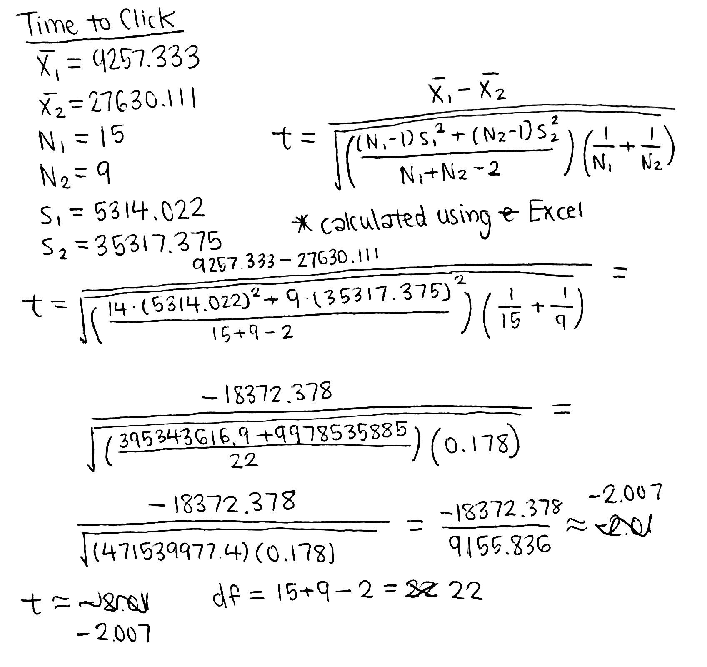
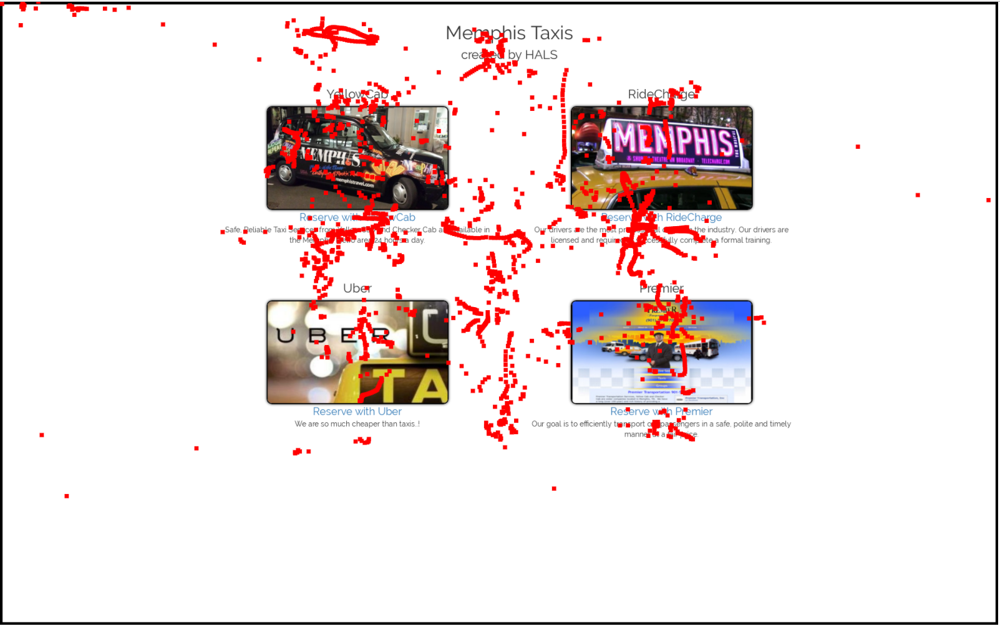
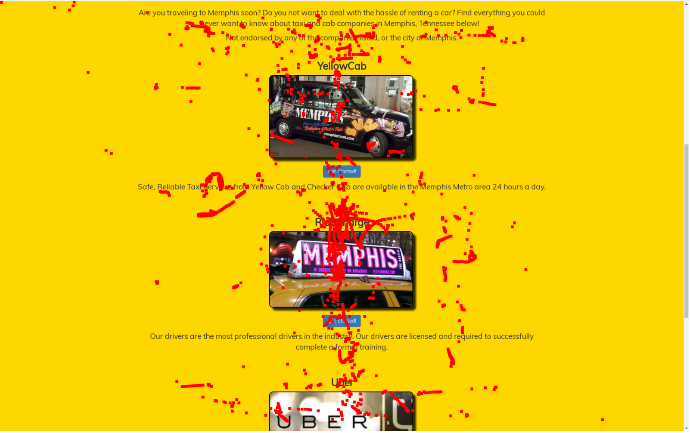
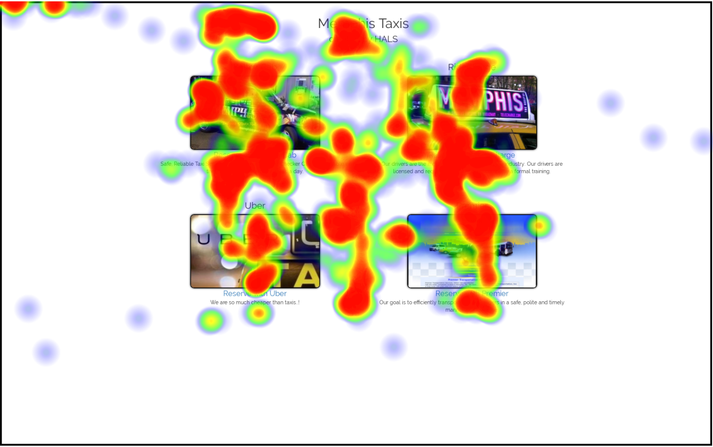
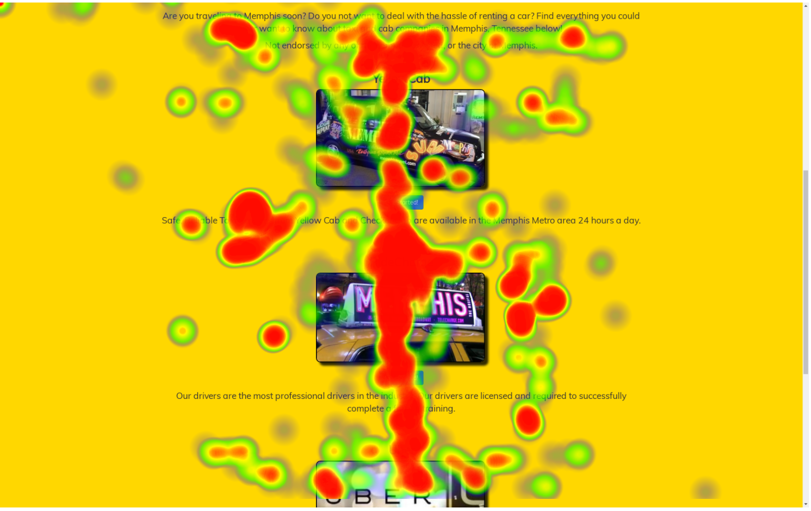

Shawna Huang
Hello!
A/B Testing
As part of a project for CSCI 1300: User Interfaces and User Experience, I performed two user interaction tests on two versions of a website: an A/B test and an eye tracking test.
NOTE:There are two designs of the same webpage hosted on this app. A script is used to randomize which of the two versions is displayed. You may have to reload the page a few times in order to view both.
I worked with a group of four to design two versions of a website for an imaginary Memphis Taxi company, using HTML/CSS.
We designed Version A to be more minimalist, with a grid layout of the four main sections of the content. We also used links with the word "Reserve Now" to take users to the external taxi company pages.
Version B is more flashy and colorful, with a gold background and a large header containing an image of the city of Memphis (not shown in the screenshot below). Underneath this, the four sections of the content are laid out vertically, with buttons saying "Get Started" to take users to the external pages.

Version A

Version B

We asked friends and classmates to browse both versions of the page as if they were users. We collected data on click-through rate, time to click, dwell time, and return rate on both Version A and Version B.
I then performed statistical tests on these four metrics. I performed chi-squared tests on click-through rate and return rate, as well as t-tests on time to click and dwell time.
All statistical tests found that there was no significant difference between Version A and Version B, except for in time to click. The time to click on Version B is significantly greater than on Version A.
The second part of this project was performing an eye tracking test. We asked one friend to browse each version in front of an eye tracking camera, then wrote functions in JavaScript to read the data from the camera. We produced two types of displays from this data: a step-by-step replay of the user's gaze and a heatmap (screenshots shown below).

Version A Replay

Version B Replay

Version A Heatmap

Version B Heatmap
Analysis of both types of tests suggests that this fictional Memphis Taxi Company should use Version B as a starting point for the design of their website. Version B had a significantly longer time to click than Version A, which means users stay on the page longer, allowing the company to make more money through ads. Additionally, the eye tracking data suggests that Version B is easer for users to focus on, as the content is centered vertically. Users can focus their gaze on the vertical center of the page and scroll for more content.
This project allowed me to gain insight into and experience with these two types of user interaction tests. I learned that eye tracking can provide a concrete view into how some users might interact with the page, while A/B tesing allows us to gather more data about many users at once. It is probably beneficial to perform eye tracking tests in the preliminary stages of testing to understand how individual users might interact with the page, then move onto A/B testing when we need to better understand the consumer base as a whole.